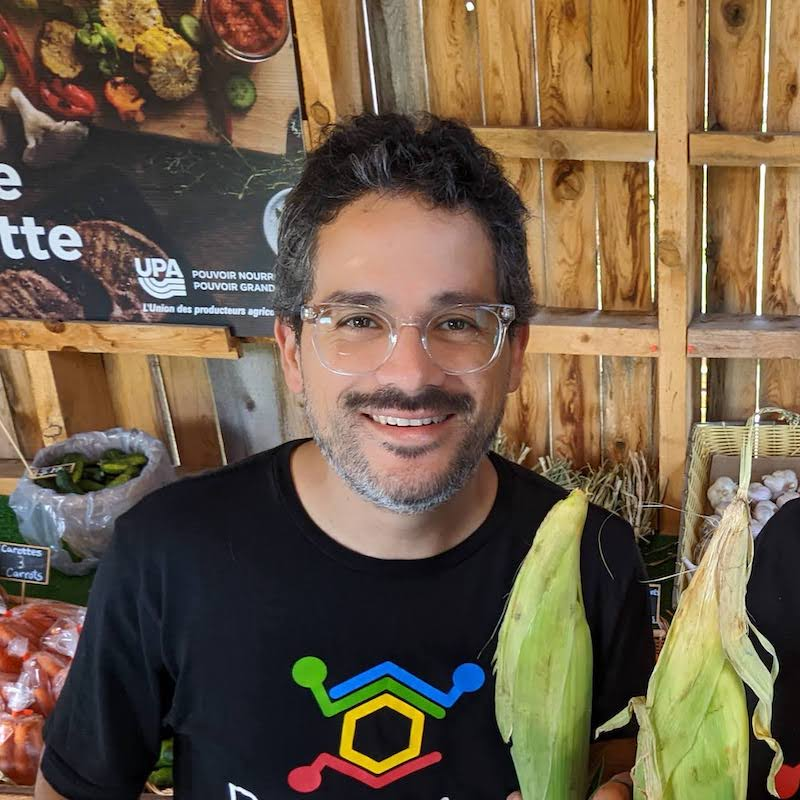

Hello, my name is álvaro (AL-vah-roh). I am a PhD student in epidemiology at UMass Amherst working on gambling harms, economic inequality, and infectious diseases. In my work and personal life, my intention is to make this world a little better and to try and do good.